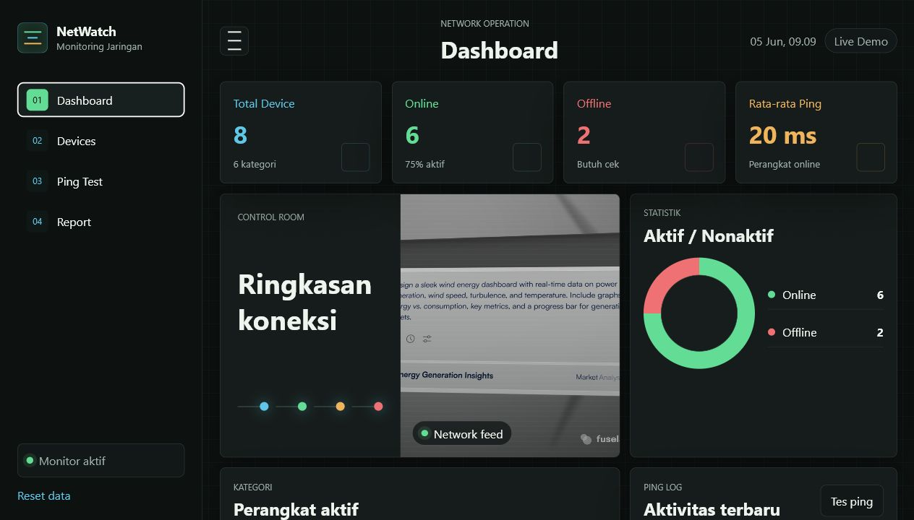

Mahasiswa Teknik Komputer yang sedang membangun kemampuan di bidang web development,
jaringan komputer, instalasi sistem operasi, dan teknologi komputer.
Siap belajar, berkembang, dan berkontribusi di dunia IT.
Tentang Saya
Belajar teknologi dari dasar, lalu mengubahnya menjadi karya nyata.
Saya adalah mahasiswa Teknik Komputer yang tertarik pada pengembangan website,
jaringan komputer, instalasi sistem operasi, dan berbagai teknologi komputer.
Saat ini saya terus memperkuat dasar-dasar pemrograman, memahami cara kerja jaringan,
serta mencoba membuat project sederhana yang relevan dengan kebutuhan dunia IT.
Portofolio ini dibuat sebagai dokumentasi proses belajar saya dan sebagai persiapan
untuk mengikuti magang di bidang IT.
01 / EDU
Teknik Komputer
Mahasiswa Teknik Komputer yang aktif mempelajari sistem komputer,
dasar pemrograman, dan teknologi pendukung dunia IT.
02 / ORG
Pengalaman Organisasi
Aktif di Himpunan Teknik Komputer sebagai divisi Minat Bakat,
dengan pengalaman mendukung kegiatan dan pengembangan potensi mahasiswa.
03 / NET
Jaringan Komputer
Tertarik pada virtual network, ZeroTier, Cloudflare Tunnel,
serta pengujian koneksi antar perangkat.
04 / LOC
Domisili
Berdomisili di Sukoharjo, Jawa Tengah, dan siap mengikuti kesempatan
magang atau kolaborasi di bidang IT.
Skill
Kemampuan yang sedang saya pelajari dan kembangkan.
HTML
CSS
JavaScript dasar
C++ dasar
Jaringan komputer
ZeroTier
Cloudflare Tunnel
Python HTTP Server
Instalasi Windows
Arduino dasar
Softskill
Core Capabilities
Karakter personal yang mendukung proses belajar, kerja tim,
dan kesiapan berkontribusi dalam lingkungan IT.
Kolaborasi Tim
Mampu bekerja sama, saling membantu, dan menyelesaikan tugas bersama.
Komunikasi Baik
Menyampaikan ide, kendala, dan progres pekerjaan dengan jelas.
Adaptabilitas
Siap menyesuaikan diri dengan tools, sistem, dan cara kerja baru.
Semangat Belajar
Aktif belajar hal baru dan terbuka menerima arahan serta evaluasi.
Project
Project sederhana yang menunjukkan proses belajar saya.
01

Dashboard Monitoring Jaringan
Dashboard monitoring jaringan untuk menampilkan ringkasan perangkat, status online
dan offline, rata-rata ping, serta aktivitas terbaru dalam tampilan web yang responsif.
Membuat server lokal sederhana menggunakan Python untuk menampilkan halaman website.
Project ini saya gunakan untuk memahami cara website dapat dijalankan dari komputer lokal.